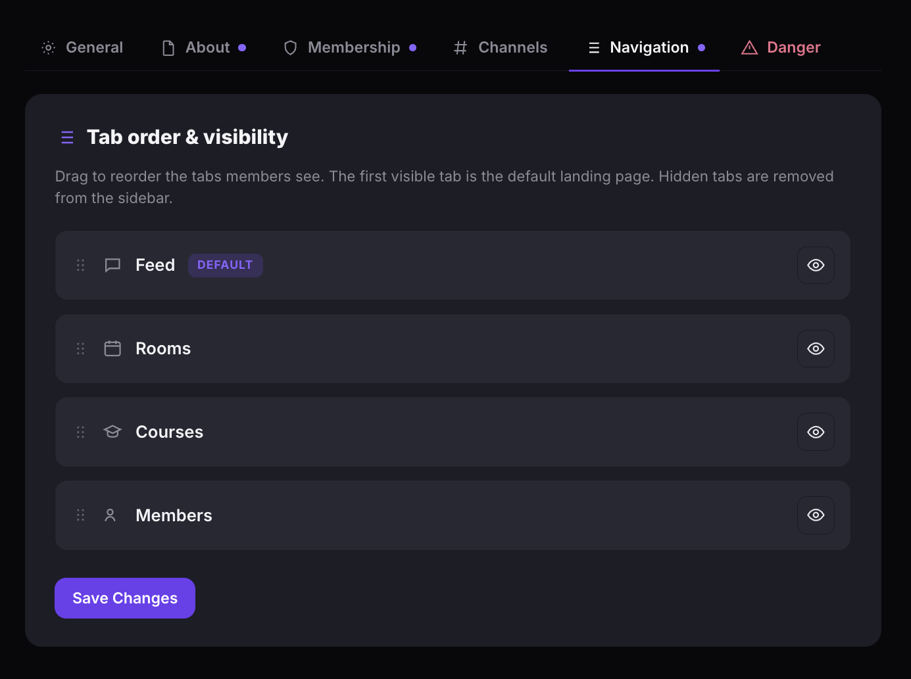
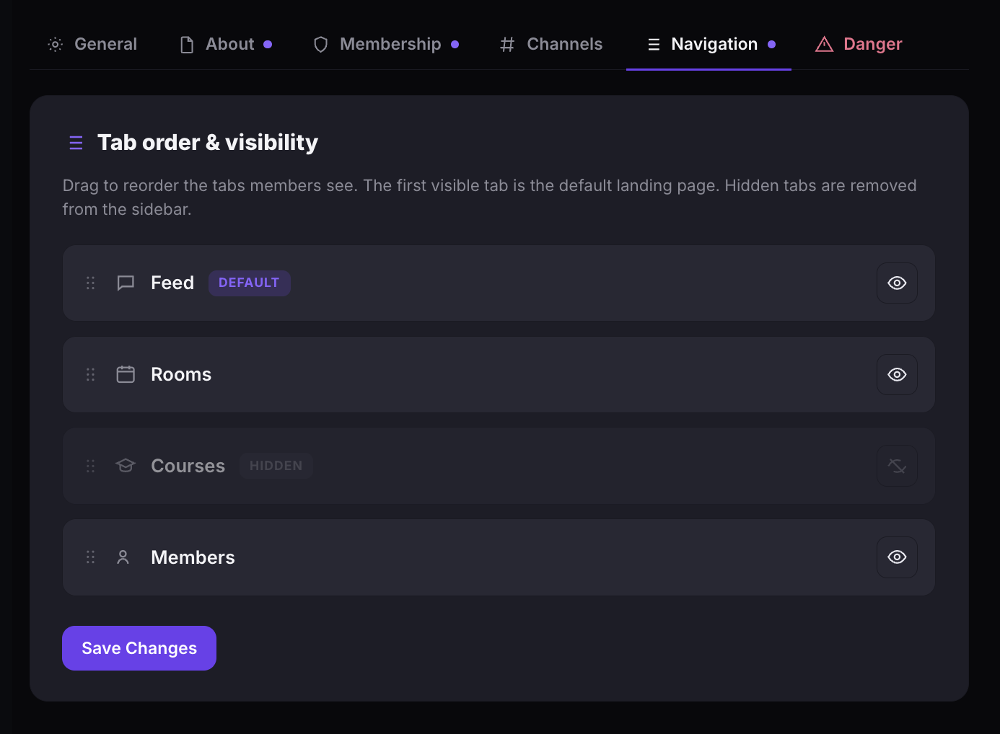

Manage community navigation
Control which tabs appear in your community's sidebar and the order members see them. Hide tabs you don't use and set the default landing page.
Reorder tabs
- Open your community and click Settings in the left sidebar.
- Click the Navigation tab.
- Under Tab order & visibility, drag any tab up or down to change its position.
- Click Save Changes.
The first visible tab in the list becomes the default landing page — the page members see when they open your community.
Tip: To change the default tab, drag the tab you want as the default to the first position in the list.

Hide or show a tab
- On the Navigation tab, find the tab you want to hide.
- Click the eye icon next to that tab. A crossed-out eye means the tab is hidden.
- Click the eye icon again to make a hidden tab visible.
- Click Save Changes.
Hidden tabs are removed from the member sidebar entirely. Members will not see them or be able to navigate to them.

Tip: If your community doesn't use Courses or Rooms yet, hide those tabs to keep the sidebar clean. You can show them again any time.